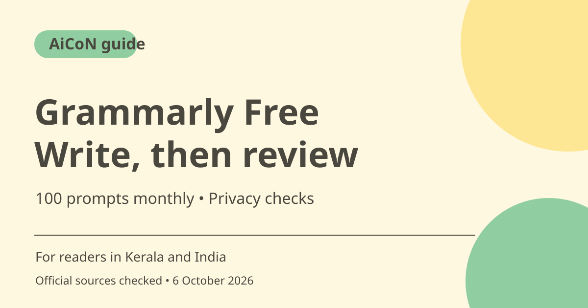

Grammarly Free: 100 AI prompts and writing-help limits
Grammarly Free checks writing and includes 100 AI prompts per month. Pro adds more prompts and advanced writing tools. Review suggestions for meaning, confirm billing before a trial and avoid submitting confidential material without permission.

What is Grammarly?
Grammarly is a writing assistant that checks spelling and grammar and offers on-demand AI drafting or rewriting. The current plans page places 100 AI prompts per month in Free and 2,000 per member per month in Pro. A prompt allowance is separate from ordinary writing suggestions; do not assume every advanced rewrite tool is available on Free.
Who is it useful for in Kerala and India?
Students, job applicants and professionals can use it to check an English draft, improve clarity or try a different tone. These are practical uses, not a promise that it understands every local context or academic requirement. Keep names, place names, technical terms and culturally specific phrases when they are intentional, even if a suggestion makes them sound more generic.
AI prompts need a clear task
Ask for a specific change such as shortening a paragraph while preserving its meaning. Give the audience and desired tone, and check that the result keeps all factual details. An AI assistant can produce fluent text that changes a promise, removes a caveat or invents a reason. You remain responsible for what you send or submit.
Pro is optional, not a requirement
Pro lists full-sentence rewrites, tone adjustments, plagiarism and AI-generated-text detection and a larger prompt allowance. Its presence on a comparison table does not prove that a detector result is conclusive. Review original sources and assignment rules yourself. Do not treat any automated score as proof that a student or colleague cheated.
Trials and price wording
The fetched plans page displays US$12 and a trial with no payment today, but did not reliably establish the billing period attached to that amount. At an explicit rough ~₹96.43/USD assumption, US$12 is about ~₹1,157. This is not a confirmed monthly Indian price. Read the full charge, renewal and cancellation conditions on the account-specific checkout before accepting a trial.
What happens to text you submit?
Grammarly says its product accesses text when activated and that generative AI prompt text and context are shared with partners to provide the feature. It says partners cannot use that data for training their models. These are provider policies, not a reason to ignore employer, client or college confidentiality rules. Use a harmless sample first and remove sensitive details.
How to use it, step by step
- Open Grammarly through the official plans or AI writing page and choose Free if you only want to test it.
- Start with a short non-sensitive English draft you wrote yourself. Check the spelling and grammar suggestions without automatically accepting everything.
- Use the available AI prompt interface to request one specific change, such as a clearer paragraph for a general audience.
- Compare the result with the original. Check names, numbers, tone, promises and any factual additions.
- Accept only changes that preserve the intended meaning. Read the complete final text before sending or submitting it.
- Check remaining prompt usage in the account. Free includes 100 per month, not unlimited AI drafting.
- If considering Pro, inspect trial end, full billed amount, renewal and cancellation route. Do not treat no payment today as no future charge.
Cost, eligibility and limits
| Free | ₹0, with 100 AI prompts monthly on the current plans page. |
|---|---|
| Pro | 2,000 AI prompts per member monthly and advanced writing features. The displayed US$12 equals roughly ~₹1,157 at an rough ~₹96.43/USD estimate, but billing period was not reliably established from fetched text. |
| Privacy | Prompt text and context can go to AI partners under the provider's stated policy. Use confidential writing only when permitted. |
| Limits | AI output and detector results require judgement. Free does not establish access to every Pro feature. |
Frequently asked questions
Is Free genuinely free?
The official page describes a ₹0 Free plan and 100 monthly AI prompts.
Is US$12 the confirmed Indian monthly price?
No. This guide could not reliably map its billing period from the fetched page. Check your final local offer.
Should I accept every suggestion?
No. Review meaning, factual details and voice before sending the writing.
Official sources
- PTI 6 October exchange-rate report used for rough INR estimates
- Current plans
- AI writing and data policy explanation
Checked 6 October 2026. Features and prices can change. This is a guide, not a personal product test.